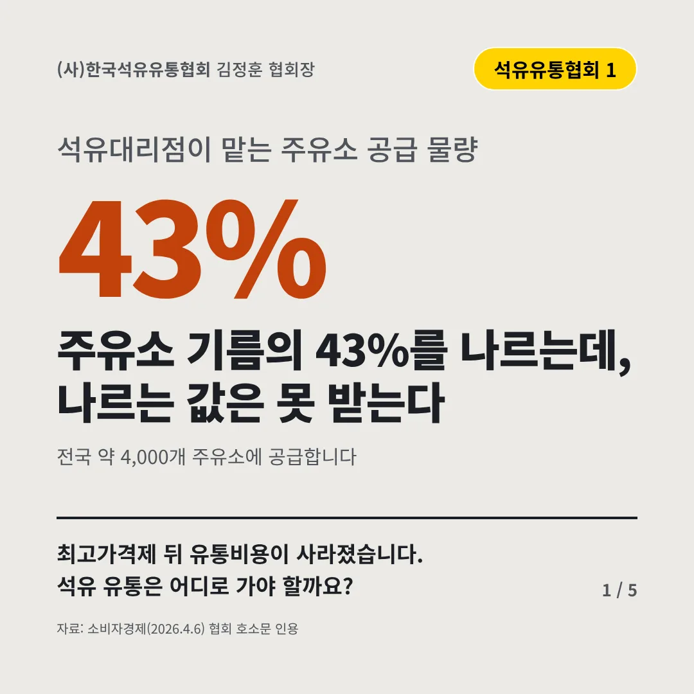
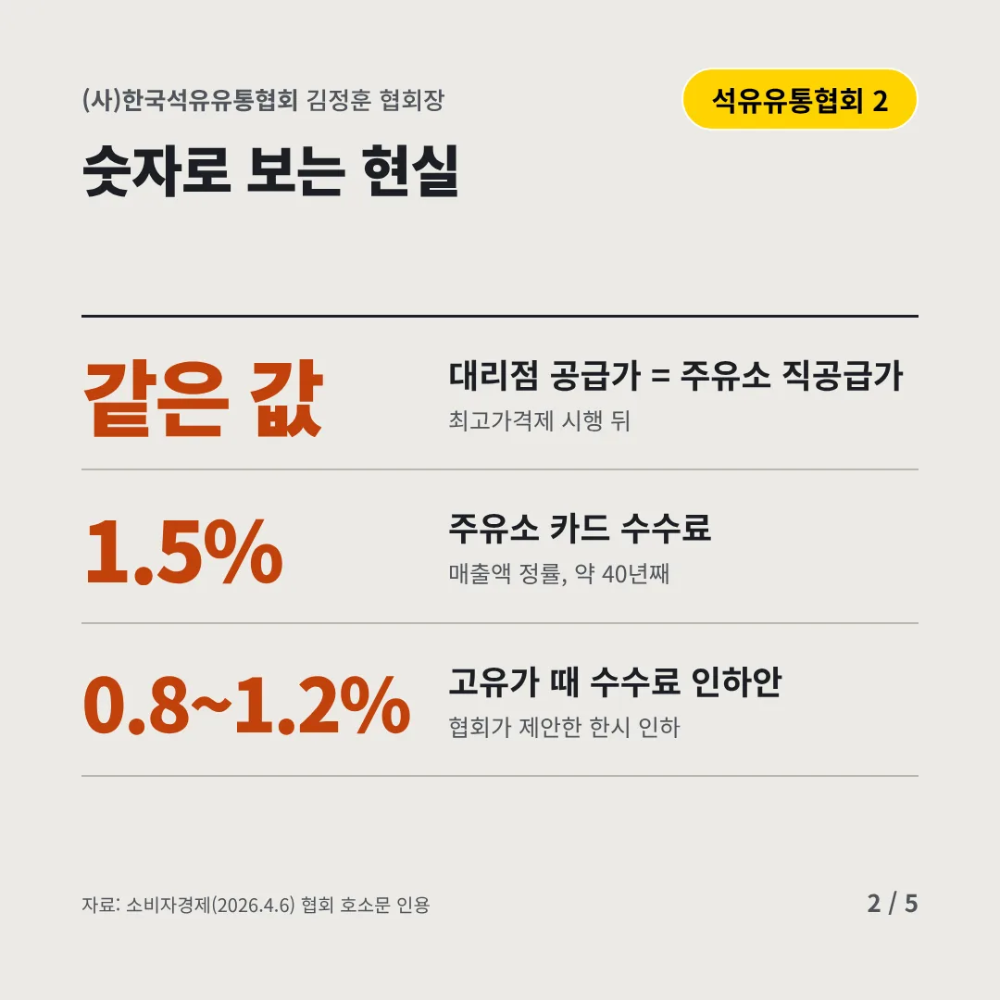
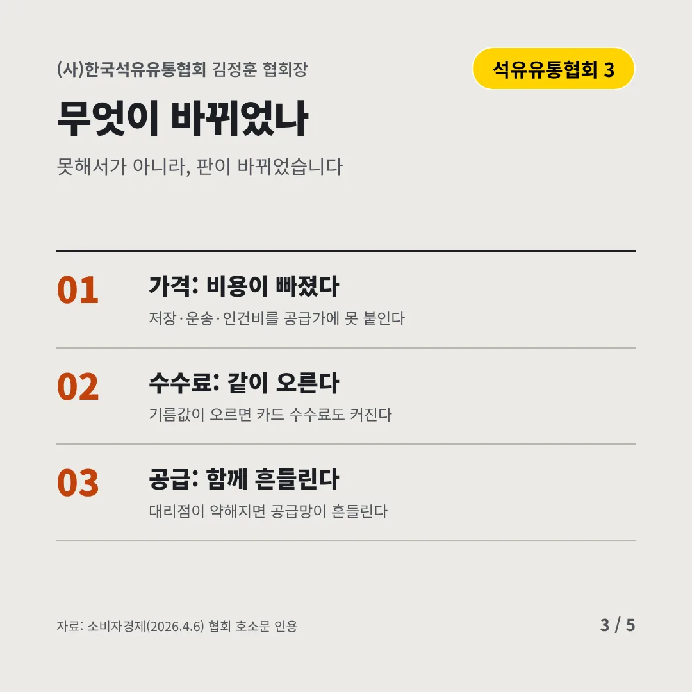
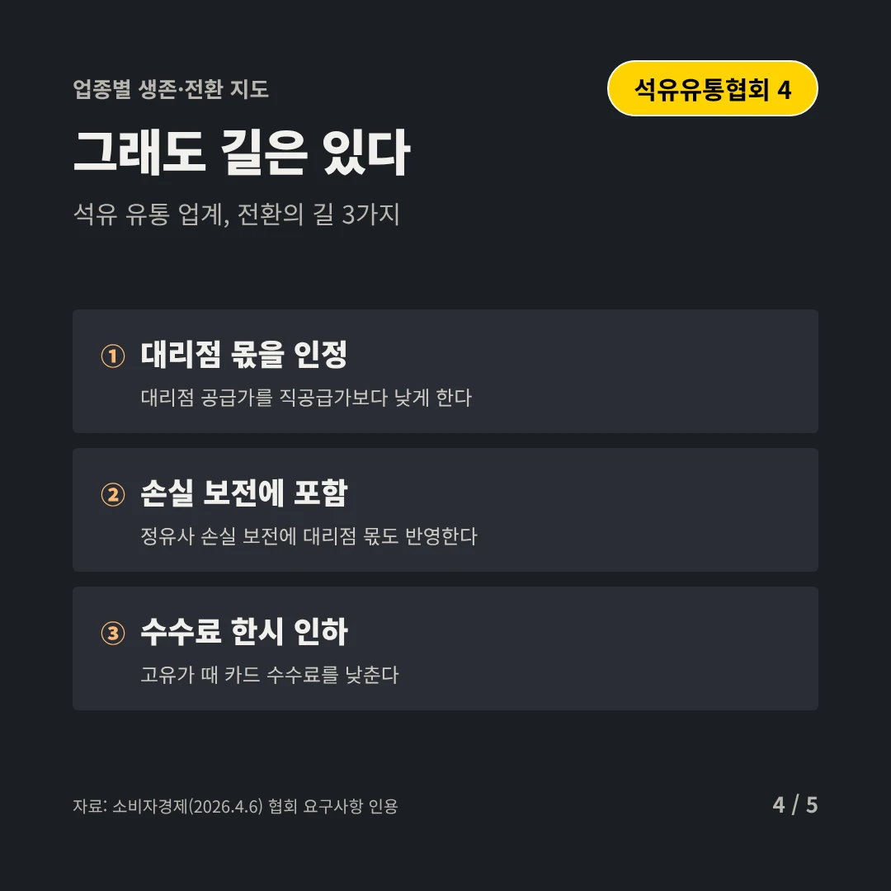
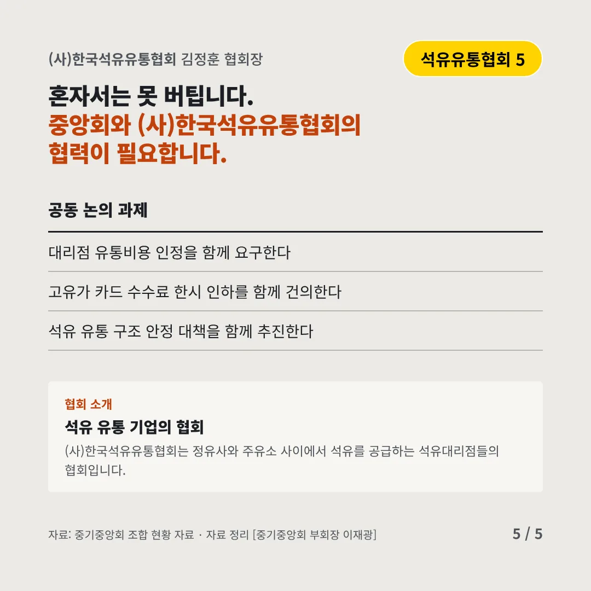
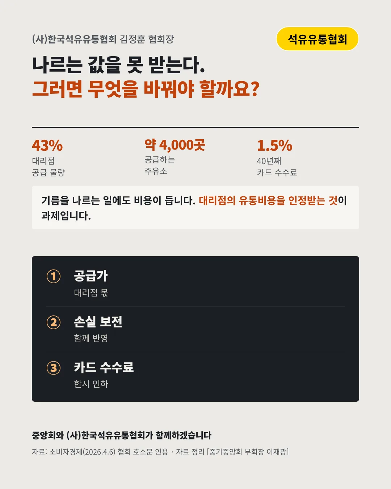

(사)한국석유유통협회
주유소 기름의 43%를 나르는데, 나르는 값은 못 받는다
43% 석유대리점이 맡는 주유소 공급 물량






최고가격제 뒤 유통비용이 사라졌습니다. 석유 유통은 어디로 가야 할까요?
숫자로 보는 현실
- 같은 값대리점 공급가 = 주유소 직공급가최고가격제 시행 뒤
- 1.5%주유소 카드 수수료매출액 정률, 약 40년째
- 0.8~1.2%고유가 때 수수료 인하안협회가 제안한 한시 인하
무엇이 바뀌었나
- 가격: 비용이 빠졌다저장·운송·인건비를 공급가에 못 붙인다
- 수수료: 같이 오른다기름값이 오르면 카드 수수료도 커진다
- 공급: 함께 흔들린다대리점이 약해지면 공급망이 흔들린다
그래도 길은 있다
- 대리점 몫을 인정대리점 공급가를 직공급가보다 낮게 한다
- 손실 보전에 포함정유사 손실 보전에 대리점 몫도 반영한다
- 수수료 한시 인하고유가 때 카드 수수료를 낮춘다
한 장 요약

협회 소개
(사)한국석유유통협회는 정유사와 주유소 사이에서 석유를 공급하는 석유대리점들의 협회입니다.
자료: 소비자경제(2026.4.6)